為了記念劇場版「Fate/stay night[Heaven's Feel]」的公開，舉辦劇場版「Fate/stay night[Heaven's Feel]」公開記念宣傳活動！
◆宣傳活動舉辦期間◆
2017年10月8日(日) 12:00～11月10日(五) 22:5911月12日(日) 22:59
為了記念劇場版「Fate/stay night[Heaven's Feel]」的公開，贈送劇場版的動畫製作擔當ufotable所繪製的劇場限定的概念禮裝！
自2017年10月14日(六)於劇場版「Fate/stay night[Heaven's Feel]」上映的全國128間電影院啟動「Fate/Grand Order」的程式，得到「劇場來場特典」概念禮裝吧！
◆領取條件◆
全部的Master對象
※新玩家想要可自由行動，必須推進直到通過序章第3節為止。
※10/11 17:00追記
| 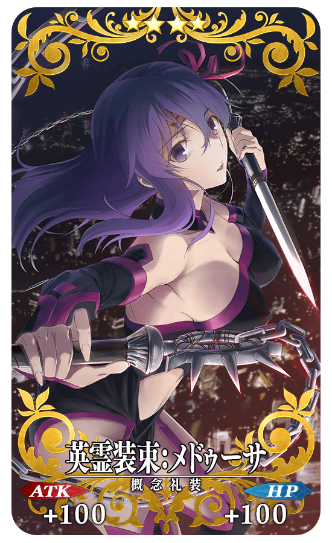 |
★★★★SR |
| 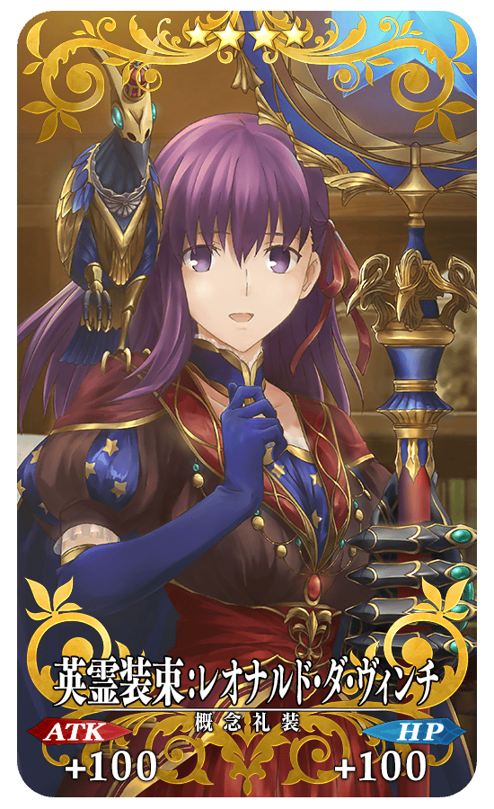 |
★★★★SR |
| 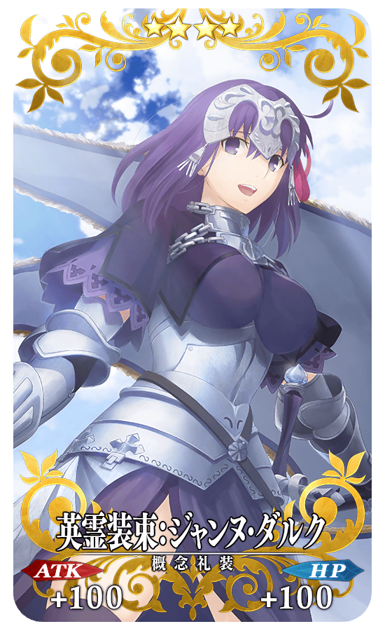 |
★★★★SR |
| 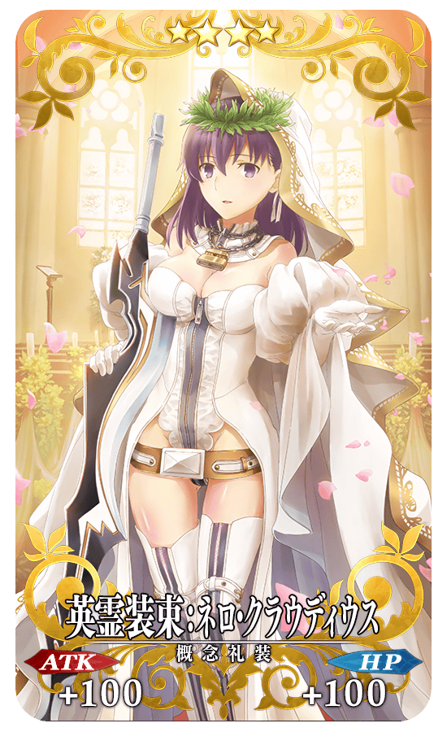 |
★★★★SR |
| 週 | 入手期間 | 來場特典 |
|---|---|---|
| 【第1週】 | 10月13日(五) 23:00～ 10月20日(五) 22:59 | 英霊装束:メドゥーサ |
| 【第2週】 | 10月20日(五) 23:00～ 10月27日(五) 22:59 | 英霊装束:レオナルド･ダ･ヴィンチ |
| 【第3週】 | 10月27日(五) 23:00～ 11月3日(五) 22:59 | 英霊装束:ジャンヌ･ダルク |
| 【第4週】 | 11月3日(五) 23:00～ |
英霊装束:ネロ･クラウディウス |
※「劇場來場特典」概念禮裝全部有4張，每週替換。
※請注意最多能入手全4種，超過入手期間的「劇場來場特典」概念禮裝會變為無法入手。
搜尋附近上映劇場版「Fate/stay night[Heaven's Feel]」的電影院，請自下述的URL確認。
http://www.fate-sn.com/theater/
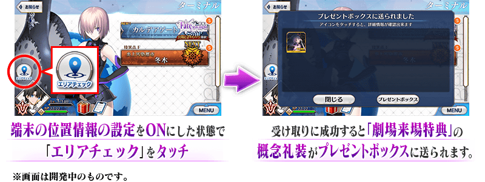
※10/11 17:00修正
10月13日(五) 23:00～11月10日(五) 22:59的舉辦期間中，在管理室(ターミナル)畫面左側會顯示「位置檢查(エリアチェック)」圖示。在劇場內確認通訊環境後，請將使用裝置的「位置情報」的設定調為ON。
通訊狀態不穩和「位置情報」設定為OFF的情況，會無法順利入手「劇場來場特典」的概念禮裝。
※訊號狀況、建物等障礙物等的影響，會有位置情報(GPS)產生誤差的可能性。
因此可能會已在舉辦區域內仍無法領取的情況，請嘗試稍微移動地點。
※領取「劇場來場特典」的概念禮裝時，請務必在上映開始前或上映結束後，於售票處和休息區進行。
上映中的操作會給其他人帶來麻煩，請注意絕對別進行。
※邊走邊使用智慧型手機會給其他行人帶來麻煩，非常危險請自制。關於在遊玩中發生事故和糾紛不會幫負任何責任。
※給劇場內的客人和周圍店家等帶來麻煩的行為(佔座、大聲喧嘩、丟棄垃圾等)請自制。
為了記念劇場版「Fate/stay night[Heaven's Feel]」的公開，新魔術禮裝「2004年的碎片」登場！
舉辦期間中，通過在迦勒底之門內出現的「魔術禮裝關卡･2004年的碎片」的話，可入手新魔術禮裝「2004年的碎片」。
◆舉辦期間◆
2017年10月8日(日) 12:00～10月22日(日) 11:59
◆参加條件◆
全部的Master皆能參加
※新玩家想要可自由行動，必須推進直到通過「特異點F 炎上汙染都市 冬木 第3節」為止。
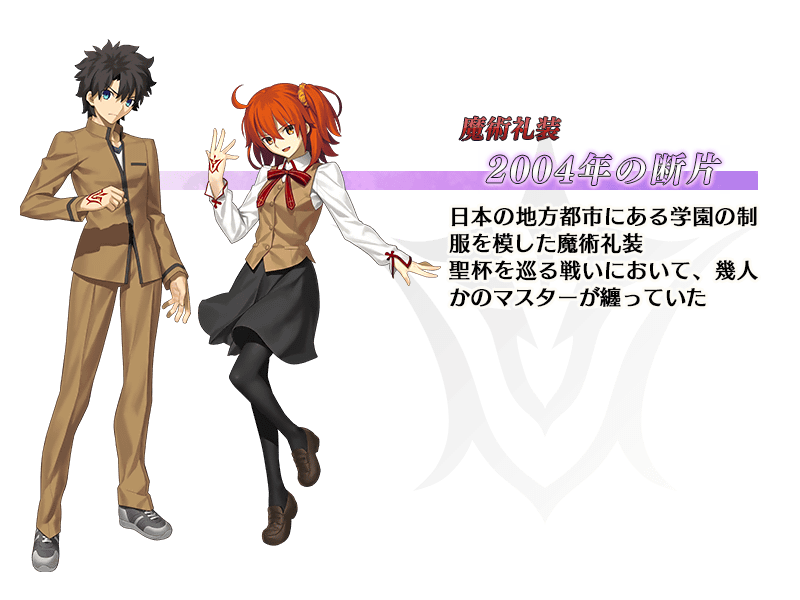
舉辦期間中，在迦勒底之門內出現的全部魔術禮裝獲得關卡的AP消耗量變為1/2。
◆舉辦期間◆
2017年10月8日(日) 12:00～10月22日(日) 11:59
◆對象關卡◆
在迦勒底之門內出現的全部魔術禮裝獲得關卡為對象
※在舉辦期間中從達文西工房內的「稀有稜鏡交換」新開放魔術禮裝獲得關卡也為對象。
「咒腕的哈桑」的戰鬥動作及寶具演出翻新！
◆翻新時間◆
2017年10月8日(日) 12:00～
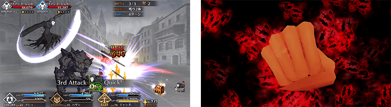
介紹翻新的「咒腕的哈桑」寶具演出！
在Fate/Grand Order官方網站內的公告中，公開了「★2(UC)咒腕的哈桑」的寶具演出。敬請確認。
在達文西工房的「稀有稜鏡交換」追加新道具。
通過AnimeJapan 2016[Heaven's Feel]合作關卡的話可獲得概念禮裝[Heaven's Feel]。
◆新道具◆
[Heaven's Feel]獲得關卡開放權
◆追加時間◆
2017年10月8日(日) 12:00～
| 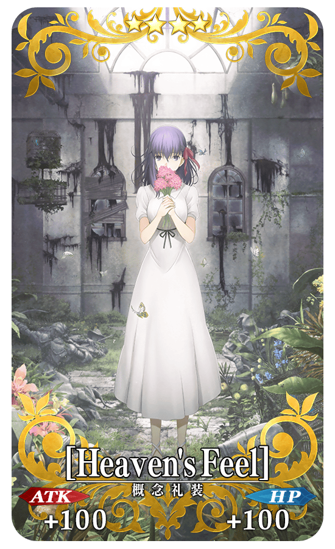 |
★★★★SR |
| 追加道具 | 能交換可能次數 | 必要的稀有稜鏡數 |
|---|---|---|
| [Heaven's Feel]獲得關卡 | 1次 | 3個 |
◆劇場版「Fate/stay night[Heaven's Feel]」公開記念Pick Up召喚(每日交替)期間◆
期間:2017年10月8日(日) 12:00～10月22日(日) 11:59
記念劇場版「Fate/stay night[Heaven's Feel]」公開以期間限定舉辦Pick Up召喚(每日交替)！
「★4(SR)帕爾瓦蒂(雪山神女)」新登場！
另外，「★4(SR)Emiya(Archer)」「★4(SR)海克力斯」「★4(SR)阿爾托莉亞・潘德拉剛〔Alter〕(Saber)」3位以每日交替Pick Up。
包含「★4(SR)帕爾瓦蒂」，「★5(SSR)阿爾托莉亞・潘德拉剛(Saber)」「★3(R)庫・夫林(Lancer)」「★3(R)美杜莎(Rider)」「★3(R)美狄亞」的5位常駐Pick Up！
※新登場的Servant「★4(SR)帕爾瓦蒂」在Pick Up期間結束後會追加到故事召喚。
另外，新概念禮裝「★5(SSR)願いの先」「★4(SR)戦友」「★3(R)夢の跡」也以期間限定新登場！也是劇場版的動畫製作擔當ufotable所繪製！
※「★3(R)夢の跡」在Pick Up期間中，也能在友情點數召喚獲得。
詳情請在聖晶石召喚畫面左下的召喚詳細確認。
Pick Up期間中，新登場Servant、Pick Up Servant、期間限定概念禮裝的出現機率提升！
10次召喚中確定1張★4(SR)以上和確定1位★3(R)以上的Servant！
※確定★4(SR)以上包含Servant和概念禮裝。
※所謂「出現機率提升」意指比同稀有度的Servant及概念禮裝出現機率更高的設定。
| 每日交替Pick Up期間 | 每日交替Pick Up內容 |
|---|---|
| 10月8日(日) 12:00～10月10日(二) 22:59 | 帕爾瓦蒂 |
| 10月10日(二) 23:00～10月11日(三) 22:59 | 帕爾瓦蒂 Emiya(Archer) |
| 10月11日(三) 23:00～10月12日(四) 22:59 | 帕爾瓦蒂 海克力斯 |
| 10月12日(四) 23:00～10月13日(五) 22:59 | 帕爾瓦蒂 阿爾托莉亞・潘德拉剛〔Alter〕(Saber) |
| 10月13日(五) 23:00～10月22日(日) 11:59 | 帕爾瓦蒂 |
※請注意會以每日交替變更Pick Up的Servant。
Pick Up期間中，在迦勒底之門會出現帕爾瓦蒂體驗關卡！
※通過「特異點F 炎上汙染都市 冬木」後開放。
迎接｢★4(SR)帕爾瓦蒂」做為支援成員，挑戰期間限定的關卡！
別錯過體驗Servant技能與寶具的機會！
◆帕爾瓦蒂體驗關卡舉辦期間◆
2017年10月8日(日) 12:00～10月22日(日) 11:59
◆關卡通過報酬◆
呼符
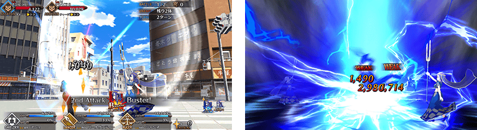
新開放「★4(SR)帕爾瓦蒂」的靈衣。
自10月8日(日) 12:00在達文西工房的「魔力稜鏡交換」做為新道具，追加「★4(SR)帕爾瓦蒂」的靈衣開放權！
◆追加時間◆
2017年10月8日(日) 12:00～
| 追加道具 | 能交換次數 | 必要的魔力稜鏡數 |
|---|---|---|
| 靈衣「少女の捜し物」開放權 | 1次 | 1000個 |
想開放「★4(SR)帕爾瓦蒂」的靈衣「少女の捜し物」的話，除了靈衣開放權外必須再加上以下的開放條件和素材。
※在劇場版「Fate/stay night[Heaven's Feel]」公開記念宣傳活動追加靈衣的Servant只有「★4(SR)帕爾瓦蒂」。
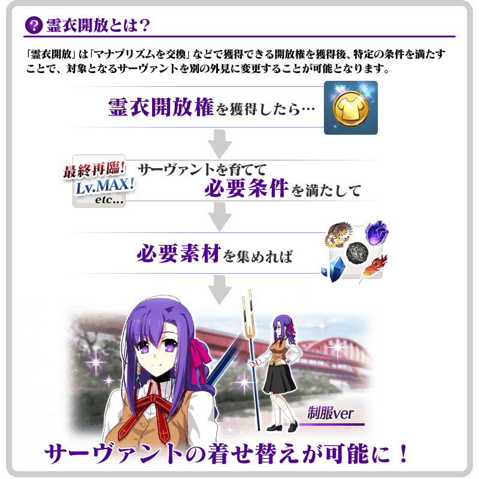
※「靈衣開放」後自動切換戰鬥角色和圖示。若想回到「靈衣開放」前的狀態和變成其他再臨階段的情況，可自Servant詳細畫面變更。
※「靈衣開放」只變更Servant的外觀，職階和能力等並無變化。
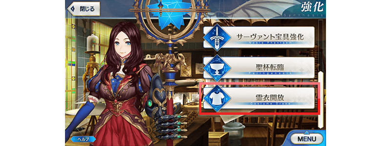
可自強化畫面選擇。
介紹帕爾瓦蒂的寶具演出！
在Fate/Grand Order官方網站內的公告中，公開了「★4(SR)帕爾瓦蒂」的寶具演出。敬請確認。
為了記念劇場版「Fate/stay night[Heaven's Feel]」公開，Fate/stay night關聯Servant的強化關卡及幕間物語的AP消耗量以期間限定變為1/2！
◆舉辦期間◆
2017年10月8日(日) 12:00～10月22日(日) 11:59
※請注意曜日關卡為對象外。
◆對象Servant◆
・阿爾托莉亞・潘德拉剛(Saber)
・吉爾伽美什(Archer)
・阿爾托莉亞・潘德拉剛〔Alter〕(Saber)
・Emiya(Archer)
・海克力斯
・庫・夫林(Lancer)
・美杜莎(Rider)
・美狄亞
・咒腕的哈桑
・佐佐木小次郎
※關於幕間物語的AP消耗1/2，與於2017年10月4日(三) 17:00～10月11日(三) 11:59期間舉辦的「幕間物語宣傳活動 第2彈」舉辦期間重疊，上述對象Servant為期間延長。
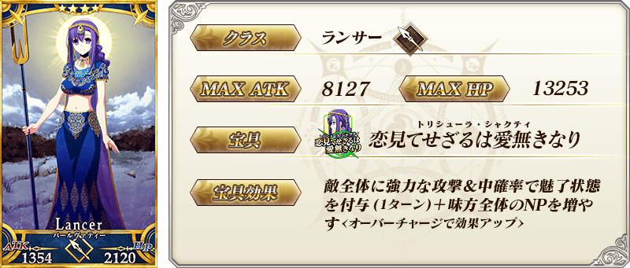
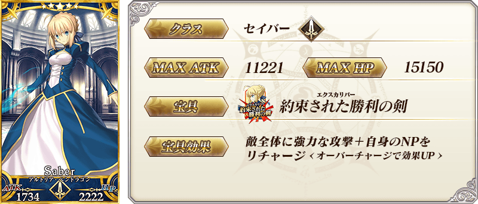

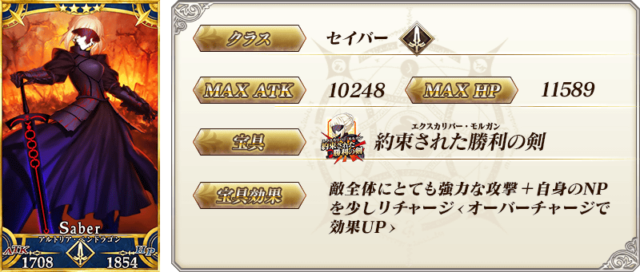


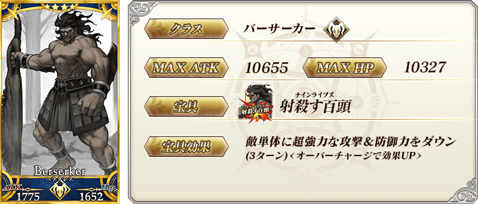


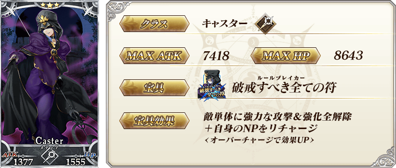
| 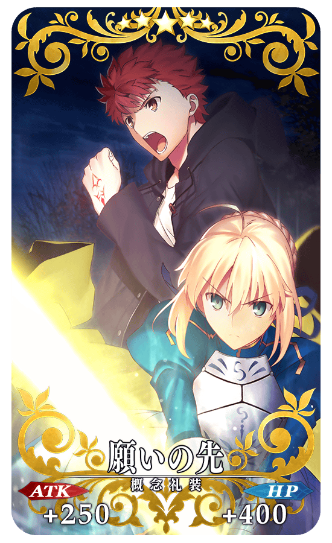 |
★★★★★SSR |
| 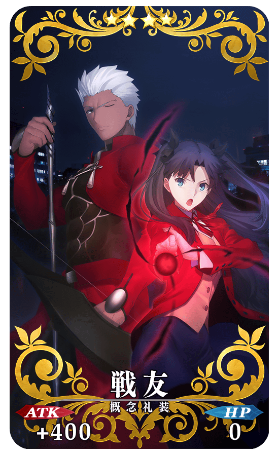 |
★★★★SR |
| 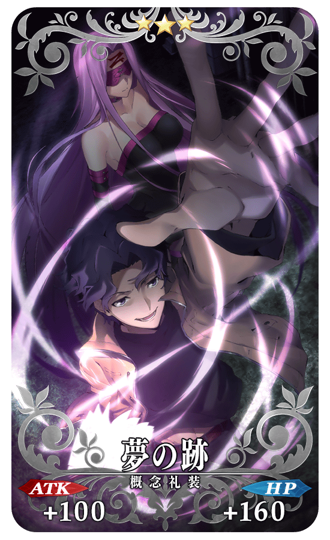 |
★★★R |
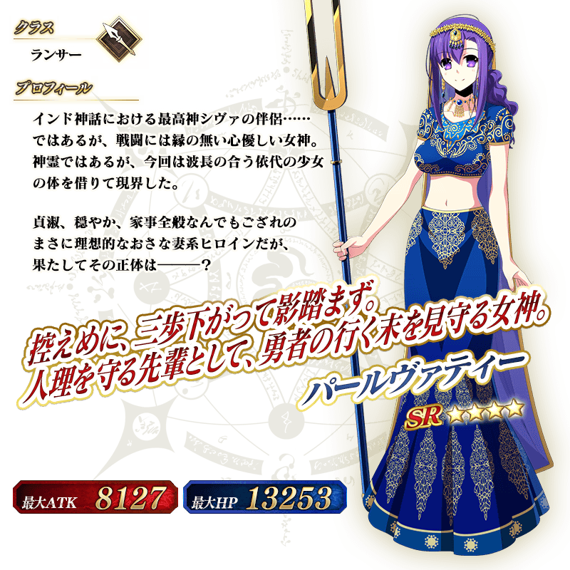
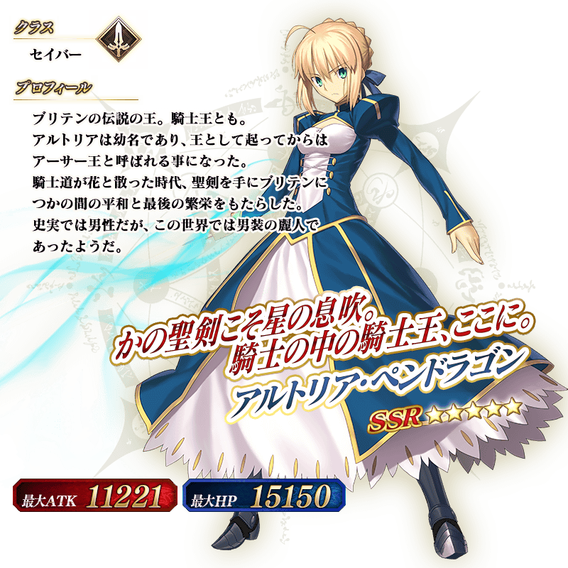